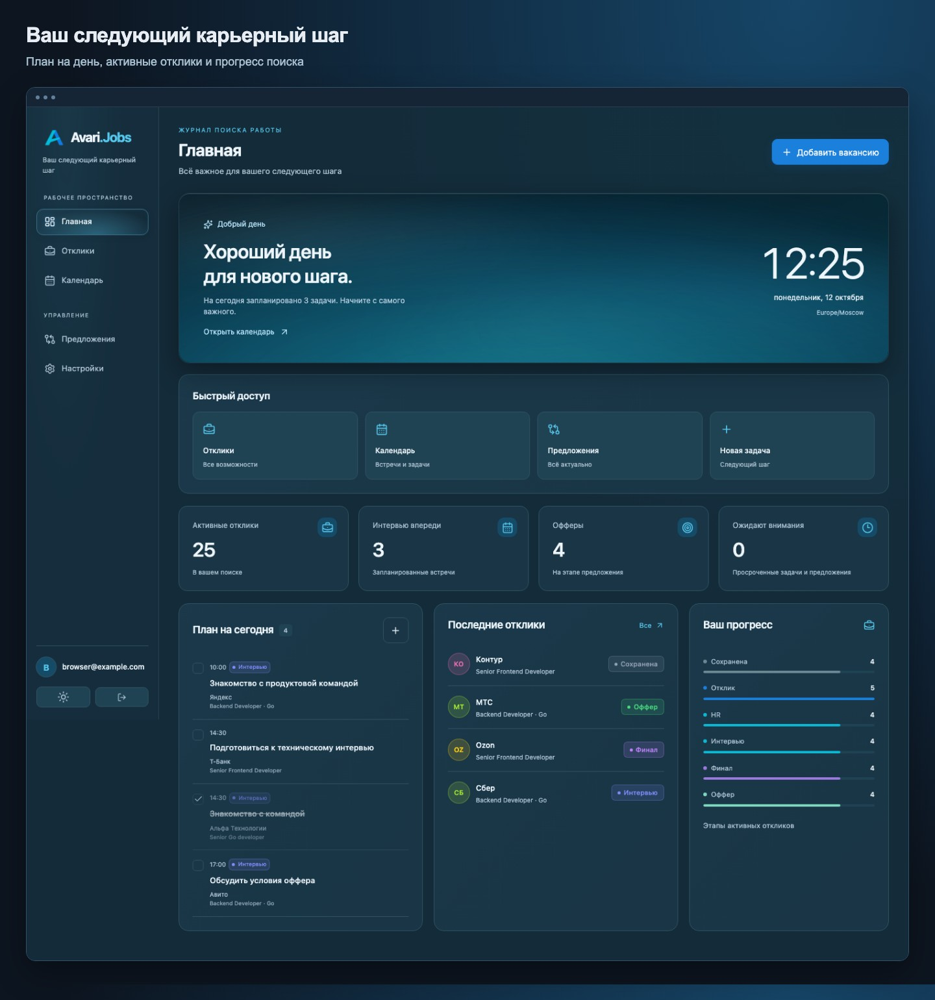
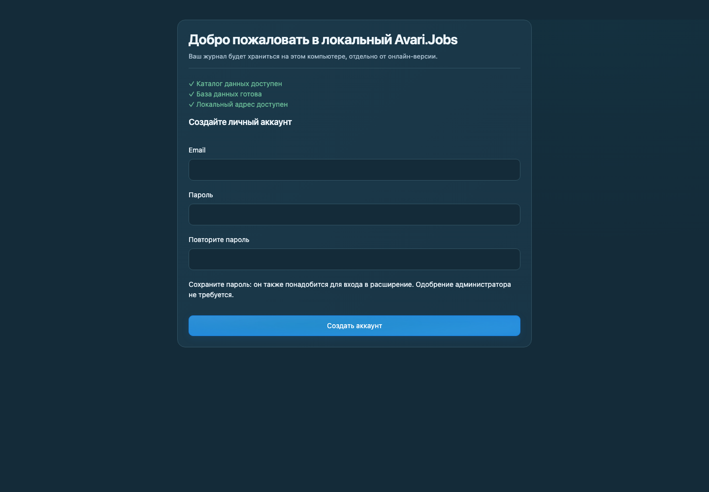

Сохраните вакансию
Откройте карточку на поддерживаемой площадке и используйте расширение. Или добавьте вакансию вручную в журнале.
ЛОКАЛЬНАЯ ВЕРСИЯ
Вакансии, отклики и интервью в одном месте. Установите Avari.Jobs — приложение запустит сервис и откроет привычный интерфейс в браузере.
Скачать и настроитьWindows 10/11 · macOS 13+ · Без Docker и терминала

ОТ СКАЧИВАНИЯ ДО ПЕРВОЙ ВАКАНСИИ
Выберите систему, затем следуйте подсказкам.
Шаг можно открыть
в любом порядке.
ШАГ 01 / 04
Приложение работает в фоне. Журнал открывается в браузере — установите Avari.Jobs, а остальное поможет настроить мастер.
Последняя версия: v1.1.0 · Все файлы и контрольные суммы ↗
Эти сборки пока не подписаны сертификатом издателя. Windows может показать предупреждение SmartScreen, а macOS — ограничить запуск через Gatekeeper. Проверьте источник файла; если система запрещает запуск, онлайн-версия доступна без установки.
Откройте установщик .exe, завершите установку и запустите Avari.Jobs из меню «Пуск». Go, Node.js и Docker устанавливать не нужно.
Откройте меню Apple → «Об этом Mac». Если указано «Чип Apple M…», выберите Apple Silicon. Если указано «Процессор Intel», выберите Intel.
Linux: доступны серверные архивы и инструкция самостоятельного запуска.
ШАГ 02 / 04
Лаунчер проверит каталог данных, базу и локальный порт, затем откроет браузер.
Укажите email и пароль от 10 символов. Одобрение администратора не требуется. Сохраните пароль: он нужен для входа в расширение.
Если удобно, включите запуск при входе в систему. Позже его можно отключить в настройках.

http://127.0.0.1:8080
Если порт занят, выберите другой в лаунчере. Используйте фактический адрес, показанный вашим приложением.
ШАГ 03 / 04
Расширение работает в Chrome и других Chromium-браузерах. Выберите удобный способ установки — подключение к локальному сервису одинаковое.
Откройте страницу расширения в онлайн-версии и перейдите по ссылке на Chrome Web Store, когда она доступна.
Страница расширения ↗Если публикация в магазине ещё ожидается, доступна ручная установка.
Архив доступен в мастере и настройках локального Avari.Jobs, а также в релизе.
Скачать архив расширения ↓
В Chrome: chrome://extensions. Включите режим
разработчика.
Нажмите «Загрузить распакованное расширение» и выберите папку с файлами архива.
После входа мастер покажет, что расширение подключено. Затем откройте вакансию и сохраните её в журнал.
ШАГ 04 / 04
Откройте карточку на поддерживаемой площадке и используйте расширение. Или добавьте вакансию вручную в журнале.
Добавьте задачу или интервью. Календарь поможет видеть встречи и подготовку, а этапы — прогресс откликов.
Настройки → Импорт и экспорт → «Скачать журнал JSON». Импорт дополняет журнал и сохраняет текущие версии записей.
Закрытие вкладки или окна лаунчера не останавливает сервис. Открыть журнал, перезапустить или завершить Avari.Jobs можно через значок в трее Windows или строке меню macOS.
Автозапуск: Настройки → Общие → Локальный Avari.Jobs.
ЕСЛИ ЧТО-ТО НЕ ПОЛУЧИЛОСЬ
Запустите Avari.Jobs по иконке и проверьте состояние сервиса. Сверьте адрес сервера в расширении с адресом лаунчера. Если меняли порт, обновите адрес в расширении.
В окне лаунчера укажите свободный порт, например 8081, и нажмите «Сохранить порт и запустить». Адрес станет http://127.0.0.1:8081. Его же укажите в расширении.
В пользовательском каталоге приложения на вашем компьютере. Открыть его можно из диагностики лаунчера. Закрытие приложения и установка новой версии сохраняют данные. Для дополнительной копии экспортируйте журнал JSON.
Да. В онлайн-версии откройте настройки и скачайте полный JSON-экспорт. В локальной версии выберите этот файл в «Импорт и экспорт», проверьте предпросмотр и примените импорт. Последующие изменения между экземплярами автоматически не синхронизируются.
Внешние сервисы не могут прочитать localhost. Для календарной подписки им нужен доступный извне HTTPS-экземпляр, например онлайн-версия Avari.Jobs. Календарь внутри локального приложения работает.
Завершите Avari.Jobs через меню значка в трее, скачайте новый установщик и установите его поверх текущей версии. Данные хранятся отдельно. Перед миграциями база автоматически сохраняется в резервную копию. Автообновления пока нет.
Онлайн-версия доступна в браузере. Локальная — когда хотите хранить журнал на своём компьютере.